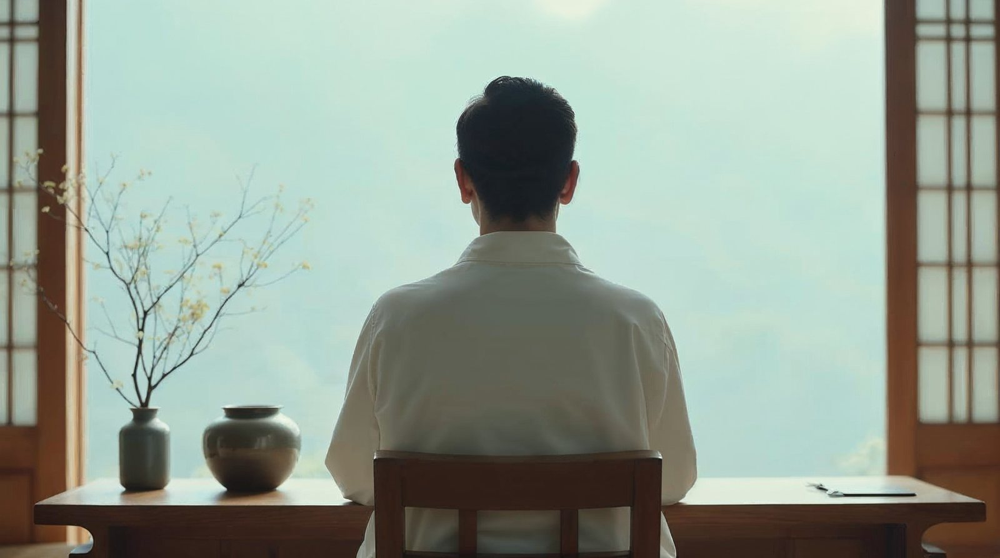
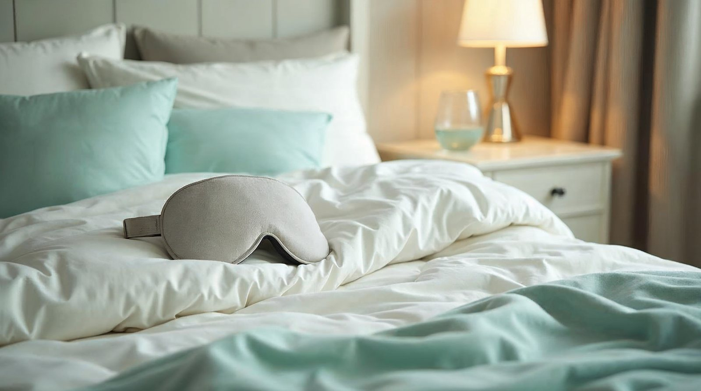
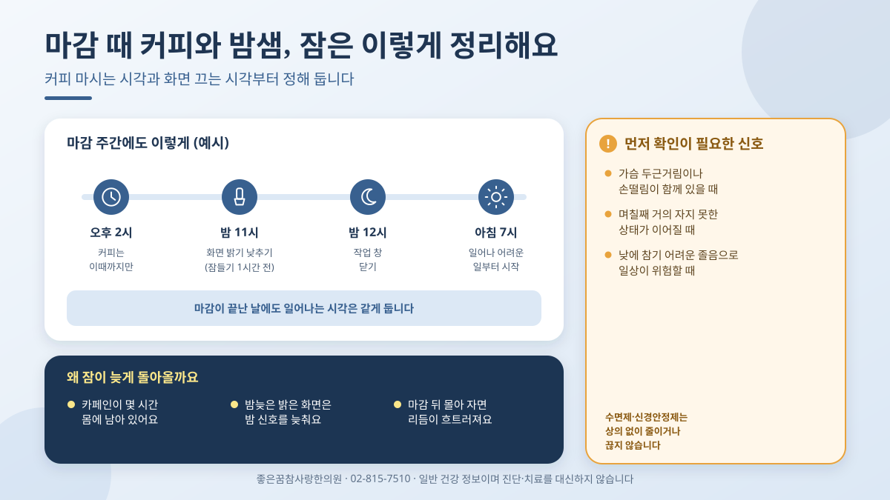

이종호 한의사 감수좋은꿈참사랑한의원 대표원장 (한의사 면허번호 19769)발행 2026-11-23 · 수정 2026-11-26
이 글의 차례
마감이 다가오면 커피를 몇 잔씩 마시며 밤늦게까지 화면 앞에 앉게 됩니다. 마감이 끝나도 잠드는 시각이 돌아오지 않아 한동안 피곤하다면, 커피를 마시는 시각과 양, 마감 뒤 회복 계획부터 함께 정리합니다.
마감 기간의 잠 문제는 대개 세 단계로 나타납니다. 마감 직전에는 늦은 카페인과 화면으로 잠드는 시각이 밀리고, 마감 당일 전후에는 밤샘으로 리듬이 크게 흔들리며, 마감이 끝난 뒤에는 몰아 자기와 늦잠으로 리듬이 쉽게 돌아오지 않습니다. 단계마다 손볼 곳이 달라서, 지금 어느 단계에 있는지부터 나눠 보면 정리가 쉬워집니다.
개발자나 디자이너 가운데에는 마감을 일의 일부로 받아들이고, 그때마다 잠이 흔들리는 것도 어쩔 수 없다고 여기는 분이 많습니다. 하지만 마감은 몇 주마다 되풀이되기 때문에, 한 번 정리해 둔 순서는 다음 마감에도 그대로 쓸 수 있습니다. 그래서 이번 마감을 넘기는 방법보다 마감을 지나는 나만의 방식을 만드는 데 초점을 둡니다.
왜 이런 불편이 생길 수 있나요
- 카페인은 마신 뒤 몇 시간 동안 몸에 남아 있어 오후 늦게 마신 커피가 잠들기를 늦출 수 있습니다.
- 커피뿐 아니라 에너지음료, 녹차, 콜라, 초콜릿에도 카페인이 들어 있어 커피 잔 수만 세면 하루 양을 적게 잡기 쉽습니다.
- 매일 많이 마시다 갑자기 끊으면 며칠 동안 머리가 무겁고 아프거나 집중이 안 되는 느낌이 생길 수 있습니다.
- 밤늦게 밝은 화면을 오래 보면 몸이 밤이라는 신호를 늦게 받는 경우가 있습니다.
- 늦게 자고 늦게 일어나는 날이 이어지면 리듬이 뒤로 밀려 쉽게 돌아오지 않습니다.
- 마감 뒤 몰아 자면 그다음 주의 잠이 오히려 흐트러지기도 합니다.
왜 마감이 끝나도 잠이 바로 돌아오지 않을까요?
마감 기간 동안 늦게 자고 늦게 일어나는 날이 이어지면 몸의 시계가 그만큼 뒤로 밀립니다. 마감이 끝났다고 해서 시계가 하룻밤 사이에 제자리로 돌아오지는 않습니다. 조금씩 천천히 당겨지는 경우가 많아, 크게 밀린 만큼 돌아오는 데도 며칠이 걸릴 수 있습니다.
여기에 마감 뒤의 해방감으로 늦게까지 게임이나 영상을 보거나, 몰아 자기로 오후 늦게 일어나면 시계는 오히려 더 뒤로 밀리기 쉽습니다. 그래서 마감 뒤에는 '많이 자기'보다 '같은 시각에 일어나기'가 먼저입니다.
한의학에서는 밤샘이 이어지면 몸을 적시고 식혀 주는 음(陰)의 기운이 소모되어, 몸은 지쳤는데 머리는 달아오른 듯 잠이 얕아질 수 있다고 봅니다. 마감 뒤 눈이 뻑뻑하고 입이 마르며 잠이 얕다면 이런 흐름으로 살펴보기도 합니다. 다만 전통적인 설명이라, 현대 연구로 확인된 내용과는 구분해서 말씀드립니다.
하루 카페인, 이렇게 세어 보세요
- 아메리카노 한 잔, 캔커피 한 개, 에너지음료 한 캔은 각각 한 번으로 셉니다.
- 진한 샷 추가나 큰 사이즈는 한 잔 반에서 두 잔으로 봅니다.
- 녹차, 홍차, 콜라, 초콜릿도 적은 양이지만 함께 적어 둡니다.
- 진통제나 감기약 가운데 카페인이 들어 있는 것도 있어, 드신 약도 함께 적습니다.
사흘만 적어 보면 생각보다 많이 마시고 있었다는 것을 알게 되는 분이 많습니다. 숫자보다 중요한 것은 마지막으로 마신 시각이니, 시각도 꼭 함께 적어 주세요. 마감 주간과 평소 주를 하나씩 적어 비교하면 차이가 더 분명해집니다.
먼저 이렇게 여쭙니다
- 하루에 커피나 에너지음료를 몇 잔 드시나요?
- 마지막 카페인은 몇 시쯤 드시나요?
- 화면을 끄는 시각은 보통 몇 시인가요?
- 마감 기간과 평소에 잠드는 시각이 얼마나 다른가요?
- 마감이 끝난 뒤 잠이 돌아오기까지 얼마나 걸리나요?
- 마감 기간에 끼니는 어떻게 챙기시나요?
- 눈 피로나 두통, 목·어깨 뻐근함이 있나요?
일상에서 먼저 해 볼 수 있는 것
- 카페인은 오후 이른 시간까지만 마시기
- 마감 기간에도 일어나는 시각은 크게 바꾸지 않기
- 밤샘 대신 이른 아침에 집중하는 시간을 시도해 보기
- 잠들기 한 시간 전에는 화면 밝기를 낮추고 작업 창을 닫기
- 마감 다음 날에는 몰아 자기보다 평소 시각에 일어나기
예를 들어 마감 주간이라도 커피는 오후 2시 전까지만 마시고, 밤 12시에는 작업 창을 닫은 뒤 다음 날 아침 7시에 일어나 어려운 일부터 시작해 보세요. 마감이 끝난 날에도 일어나는 시각은 같게 둡니다.
잠이 흔들리는 모양, 어떻게 나눠 볼까요?
- 누워도 한참 잠이 오지 않는다면, 마지막 카페인 시각과 잠들기 직전의 화면을 먼저 살핍니다.
- 잠은 드는데 새벽에 자주 깨고 개운하지 않다면, 늦은 야식과 밤샘 뒤 몰아 자기를 함께 봅니다.
- 마감이 없는 주에도 잠드는 시각이 계속 늦다면, 몸의 시계가 뒤로 밀린 채 굳어 있지 않은지 일어나는 시각부터 살핍니다.
마감 단계별로 나눠 정리해 보세요
- 마감 1~2주 전: 잔 수를 갑자기 줄이기보다 마지막 잔의 시각부터 오후 2시 전으로 당깁니다. 커피를 줄여야 한다면 하루 한 잔씩 덜어 내는 식으로 천천히 줄입니다.
- 마감 직전 며칠: 밤을 새워야 할 것 같다면 새벽 내내 버티기보다 두세 시간이라도 눕는 시간을 끼워 넣는 쪽을 권합니다. 이 기간에도 일어나는 시각은 크게 흔들지 않습니다.
- 마감이 끝난 뒤: 다음 날 아침 평소 시각에 일어나 바깥 빛을 10분쯤 보며 걷고, 졸리면 오후 이른 시간에 30분 안쪽으로 짧게 쉽니다. 사나흘 동안 이렇게 지내며 잠드는 시각이 돌아오는지 봅니다.
화면 앞에서 굳은 몸, 잠들기 전에 풀어 주기
마감 기간에는 하루 열 시간 넘게 모니터 앞에 앉아 있는 날도 생깁니다. 목은 앞으로 빠지고, 어깨는 올라가고, 눈은 깜빡임이 줄어 뻑뻑해지기 쉽습니다. 이렇게 굳은 몸으로 누우면 목과 어깨가 불편해 자세를 자꾸 바꾸게 되기도 합니다.
- 작업을 마치면 따뜻한 수건을 눈 위에 몇 분 올려 둡니다.
- 턱을 살짝 당겨 뒷목을 길게 늘이고, 어깨를 크게 뒤로 돌려 풀어 줍니다.
- 양손을 깍지 껴 머리 뒤에 대고 가슴을 펴며 숨을 크게 내쉽니다.
작업 중에도 한 시간에 한 번은 자리에서 일어나 먼 곳을 보고 물을 마셔 보세요. 마감에 쫓길수록 잊기 쉬우니 타이머를 맞춰 두는 것도 방법입니다. 모니터 높이를 눈높이에 맞추고, 의자에 엉덩이를 깊숙이 넣어 앉는 자세도 함께 챙겨 보세요.
끼니도 마감 리듬에 휩쓸리지 않게
마감이 다가오면 끼니를 거르고 커피와 과자로 버티는 날이 늘어납니다. 빈속에 마시는 커피는 속을 쓰리게 할 수 있고, 끼니 대신 먹는 단 간식은 금세 허기를 불러 다시 커피를 찾게 만들기 쉽습니다.
마감 주간일수록 점심과 저녁만큼은 자리에서 떨어져 앉아서 먹어 보세요. 배가 너무 부르거나 너무 고픈 상태 모두 잠들기를 방해할 수 있어, 저녁은 잠들기 3시간 전쯤 가볍게 마치는 편을 권합니다. 밤늦게 출출하면 라면보다 두유나 바나나처럼 가벼운 것을 조금만 드세요.

상황별 예시
- 예를 들어 출시 전날까지 새벽 3시를 넘겨 일하면서 오후 4~5시에도 아이스 아메리카노를 마시는 경우, 마지막 잔을 오후 2시로 당기고 그 뒤에는 보리차나 따뜻한 물로 바꿔 봅니다. 손이 심심하면 짧은 산책이나 스트레칭으로 대신하는 분도 있습니다.
- 예를 들어 재택으로 일하는 디자이너가 침대 옆 책상에서 밤늦게까지 작업하다 그대로 눕는 경우, 작업을 마치면 노트북을 닫아 다른 방이나 가방에 넣고, 조명을 낮춘 채 10~15분 씻고 정리하는 '퇴근 순서'를 만들어 봅니다.
- 예를 들어 마감이 끝난 토요일에 오후 2시까지 자고 일요일 밤에는 새벽 3시가 되어도 잠이 오지 않는 경우, 주말에도 평소보다 한 시간 안쪽으로만 늦게 일어나고, 모자란 잠은 오후 이른 시간 30분 낮잠으로 나눠 채워 봅니다.
스스로 점검해 보세요
- 오후 3시 이후에도 커피나 에너지음료를 마시는 날이 많다.
- 커피, 에너지음료, 녹차, 콜라를 합치면 하루 서너 잔이 넘는다.
- 잠들기 직전까지 모니터나 휴대전화를 본다.
- 마감 기간에는 잠드는 시각이 평소보다 두 시간 넘게 늦어진다.
- 마감이 끝나고 일주일이 지나도 잠드는 시각이 돌아오지 않는다.
- 커피를 거르면 머리가 아프거나 무겁다.
- 눈이 뻑뻑하고 목·어깨가 굳은 채로 잠자리에 든다.
한의원에서 함께 살필 수 있는 경우
- 마감 때마다 잠이 크게 흐트러지는 경우 일의 리듬과 잠의 모양을 함께 살핍니다.
- 커피를 줄이면 머리가 무겁고 집중이 안 되는 경우 피로와 긴장을 함께 살핍니다.
- 화면을 오래 본 뒤 눈과 목이 굳는 경우 몸의 긴장 정도를 함께 살핍니다.
첫 방문은 이렇게 진행됩니다
- 맥 짚기와 이야기 듣기: 모든 분의 맥을 먼저 짚고, 맥을 보면서 마감 주기, 커피·에너지음료를 마시는 시각과 양, 화면을 끄는 시각, 마감 전후 잠의 변화를 충분히 여쭙습니다.
- 혀·배 살피기: 필요하다고 판단될 때 설진·복진을 더해 봅니다. 커피를 마신 직후에는 혀 색이 달라 보일 수 있어 진료 전에 무엇을 드셨는지도 여쭙습니다.
- 생활 기록 함께 보기: 마감 일정과 잠 기록, 카페인 기록을 한 장에 놓고 잠이 밀리기 시작하는 시점을 함께 찾습니다.
- 방향 정하기: 상태에 맞춰 침이나 한약 상담 등을 정하고, 눈과 목·어깨가 많이 굳어 있으면 그 부분도 함께 살핍니다.
- 귀가 전 정리: 다음 마감까지 지켜볼 카페인 시각과 화면 끄는 시각을 함께 정합니다.

얼마나 지켜보고 언제 상담할까요
- 다음 마감 한 번을 지나는 동안 카페인 마지막 시각과 화면 끄는 시각을 지켜 보고, 마감 뒤 잠이 돌아오기까지 며칠 걸리는지 적어 봅니다.
- 커피 잔 수를 줄였는데도 마감 때마다 잠이 크게 흔들린다면, 카페인 말고 마감을 앞둔 긴장과 화면 시간 쪽도 함께 살펴볼 때입니다.
- 마감이 끝나고 2주가 지나도 잠드는 시각이 돌아오지 않거나, 마감이 없는 주에도 잠들기까지 한 시간 넘게 걸리는 날이 일주일에 사흘 이상이면 상담을 받아 보세요.
- 커피를 줄인 뒤 생긴 두통은 며칠 안에 가라앉는 경우가 많지만, 일주일 넘게 이어지거나 점점 심해지면 진료를 받아 보세요.
이렇게 기록해 오시면 상담이 쉬워집니다
- 마감 기간과 평소의 잠든 시각, 일어난 시각
- 커피·에너지음료의 잔 수와 마지막으로 마신 시각
- 밤샘한 날과 그다음 며칠의 잠
- 눈 피로, 두통, 목·어깨 뻐근함이 있었던 날
- 마감 기간에 거른 끼니와 야식
기록은 업무 일정표나 이슈 관리 도구 옆에 한 줄씩 남겨 두면 편합니다. 마감 날짜와 잠 기록을 나란히 놓으면 마감 며칠 전부터 잠이 밀리기 시작하는지, 마감 뒤 며칠 만에 돌아오는지가 한눈에 보입니다.
마감을 넘기느라 잠을 미뤄 온 몸에도 숨 돌릴 순서가 필요합니다. 이번 마감에 다 바꾸지 못해도 괜찮습니다. 다음에 오시면 지난 마감 뒤 잠드는 시각이 며칠 만에 돌아왔는지부터 여쭙겠습니다.
이런 증상은 먼저 확인이 필요합니다
- 두근거림이 가슴 통증·숨참과 함께 오거나, 카페인을 줄여도 두근거림·손떨림이 이어지는 경우
- 스스로를 해칠 생각이 들면 ☎ 109로 바로 연락하세요.
이런 신호가 있으면 한의원보다 가까운 병원이나 응급실을 먼저 찾으세요.
관련 글
- 결산·마감처럼 야근이 몰리는 주가 다가올 때 잠은 어떻게 미리 준비하나요?
- 모니터를 오래 보고 나면 눈이 뻑뻑하고 이마와 관자놀이가 아플 때는 어떻게 하나요?
- 재택근무를 시작한 뒤 출퇴근 경계가 사라져 잠 리듬이 흐트러질 때는 어떻게 하나요?

여쭙는 것
- 하루에 커피나 에너지음료를 몇 잔 드시나요?
- 마지막 카페인은 몇 시쯤 드시나요?
- 화면을 끄는 시각은 보통 몇 시인가요?
생활에서 해 볼 것
- 카페인은 오후 이른 시간까지만 마시기
- 마감 기간에도 일어나는 시각은 크게 바꾸지 않기
- 밤샘 대신 이른 아침에 집중하는 시간을 시도해 보기
한의원에서 함께 살필 것
- 마감 때마다 잠이 크게 흐트러지는 경우 일의 리듬과 잠의 모양을 함께 살핍니다.
- 커피를 줄이면 머리가 무겁고 집중이 안 되는 경우 피로와 긴장을 함께 살핍니다.
- 화면을 오래 본 뒤 눈과 목이 굳는 경우 몸의 긴장 정도를 함께 살핍니다.
먼저 확인이 필요한 신호
- 두근거림이 가슴 통증·숨참과 함께 오거나, 카페인을 줄여도 두근거림·손떨림이 이어지…
- 스스로를 해칠 생각이 들면 109로 바로 연락하세요.
한눈에 보는 표
| 구분 | 핵심 |
|---|---|
| 여쭙는 것 | 하루에 커피나 에너지음료를 몇 잔 드시나요? 마지막 카페인은 몇 시쯤 드시나요? |
| 생활에서 해 볼 것 | 카페인은 오후 이른 시간까지만 마시기 마감 기간에도 일어나는 시각은 크게 바꾸지 않기 |
| 한의원에서 함께 살필 것 | 마감 때마다 잠이 크게 흐트러지는 경우 일의 리듬과 잠의 모양을 함께 살핍니다. 커피를 줄이면 머리가 무겁고 집중이 안 되는 경우 피로와 긴장을 함께 살핍니다. |
| 먼저 확인이 필요한 신호 | 두근거림이 가슴 통증·숨참과 함께 오거나, 카페인을 줄여도 두근거림·손떨림이 이어지는 경우 스스로를 해칠 생각이 들면 109로 바로 연락하세요. |
자주 묻는 질문
디카페인으로 바꾸면 괜찮을까요?
바꾸는 분이 많지만 디카페인에도 카페인이 조금 남아 있을 수 있습니다. 마시는 시각도 함께 조정하는 편이 좋습니다.
마감 뒤 주말에 몰아 자면 회복되나요?
오래 몰아 자면 다음 주 리듬이 더 흐트러지는 경우가 많아 일어나는 시각을 유지하기를 권합니다.
야근이 잦은데 저녁에도 진료를 받을 수 있나요?
좋은꿈참사랑한의원은 평일 09:30~20:00(점심 13:00~14:00), 토·일·공휴일 09:30~15:00(점심시간 없음)에 진료합니다.
밤샘한 다음 날 낮잠을 자도 되나요?
오후 이른 시간에 30분 안쪽으로 짧게 자는 편이 밤잠에 부담이 적습니다. 낮잠 뒤 밤잠이 늦어지면 줄여 보세요.
좋은꿈참사랑한의원은 재진 때 지난번 이야기부터 이어서 여쭙니다. 진료시간과 예약은 오시는 길에서 확인하세요.
어디서 상담받을 수 있나요?
좋은꿈참사랑한의원은 서울 동작구 만양로2길 2 신성빌딩 3층·5층(서울 동작구 상도동, 7호선 상도역 3번 출구 근처)에 있습니다. 한의사 3명(이종호 대표원장, 조영기 수석진료원장, 정원영 진료원장)이 진료합니다. 진료시간은 평일 09:30~20:00(점심 13:00~14:00), 토·일·공휴일 09:30~15:00이며, 방문 전 전화로 확인을 권합니다. 예약은 네이버 예약, 카카오톡 상담, 전화 02-815-7510로 받습니다.
이 글은 일반적인 건강 정보이며 개인의 진단이나 치료를 대신하지 않습니다. 증상이 있거나 복용 중인 약이 있다면 진료를 통해 확인하세요. 치료 효과는 개인마다 다를 수 있습니다.
작성 기준: 일반적으로 알려져 있는 건강 정보를 참고해 정리했습니다(대표원장 감수). 증상 기록은 1~2주 동안 하루 1회, 비슷한 시간에 적어 오시면 지난 상태와 비교하기 쉽습니다.